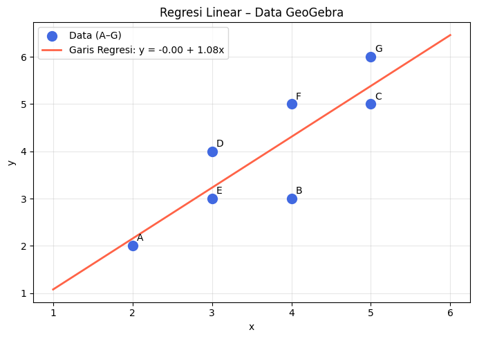

Regresi Linear#
Regresi Linear adalah salah satu metode statistik yang paling banyak digunakan dalam machine learning dan analisis data. Metode ini termasuk dalam kategori supervised learning dan digunakan untuk memprediksi nilai variabel kontinu (regression).
Mengapa Belajar Regresi Linear?#
Regresi linear sangat populer karena beberapa alasan:
Banyak digunakan – menjadi dasar berbagai metode statistik dan machine learning lainnya
Cepat – proses komputasinya efisien bahkan untuk dataset besar
Mudah digunakan – tidak memerlukan banyak hyperparameter tuning
Mudah diinterpretasikan – koefisien model dapat dibaca dan dipahami secara intuitif
Model Regresi Linear Sederhana#
Model dasar regresi linear sederhana ditulis sebagai:
Simbol |
Arti |
|---|---|
\(y\) |
Variabel respons (yang ingin diprediksi) |
\(x\) |
Variabel input (digunakan untuk melatih model) |
\(b_0\) |
Intercept (titik potong dengan sumbu-y) |
\(b_1\) |
Koefisien regresi (kemiringan garis) |
\(\varepsilon\) |
Residual (error/galat) |
Koefisien \(b_1\) merepresentasikan perubahan \(y\) untuk setiap satu satuan perubahan \(x\), yaitu \(b_1 = \Delta y / \Delta x\).
Model Regresi Linear Berganda#
Model dapat diperluas untuk beberapa variabel input sekaligus:
Estimasi Koefisien#
Konsep Dasar#
Koefisien regresi diestimasi dari sampel data. Karena merupakan estimasi, terdapat ketidakpastian — statistik menyediakan alat untuk mengukur tingkat kepercayaan estimasi tersebut.
Metode: Ordinary Least Squares (OLS)#
Koefisien dihitung dengan meminimalkan jumlah kuadrat residual (sum of squared residuals). Secara analitik, solusinya diperoleh melalui kalkulus matriks:
Di mana:
\(X\) adalah matriks desain (termasuk kolom 1 untuk intercept)
\(Y\) adalah vektor variabel respons
\(\hat{\beta}\) adalah vektor koefisien yang diestimasi
Data Contoh (dari GeoGebra)#
Data berikut digunakan sebagai contoh, terdiri dari 7 titik koordinat:
Titik |
x |
y |
|---|---|---|
A |
2 |
2 |
B |
4 |
3 |
C |
5 |
5 |
D |
3 |
4 |
E |
3 |
3 |
F |
4 |
5 |
G |
5 |
6 |
Visualisasi Interaktif dengan GeoGebra#
Di bawah ini adalah visualisasi interaktif menggunakan GeoGebra. Grafik menampilkan:
🔵 Titik data A–G dari dataset
🔴 Garis regresi hasil OLS
🟠 Garis residual (garis vertikal dari titik ke garis regresi, menunjukkan besar error)
Keterangan warna: 🔵 Titik data | 🔴 Garis regresi | 🟠 Garis residual (putus-putus)
Residual menunjukkan selisih antara nilai aktual \(y_i\) dan nilai prediksi \(\hat{y}_i = b_0 + b_1 x_i\). OLS meminimalkan jumlah kuadrat semua residual tersebut.
Implementasi dengan Scikit-Learn#
import numpy as np
from sklearn.linear_model import LinearRegression
import matplotlib.pyplot as plt
# Data dari GeoGebra
X = np.array([[2], [4], [5], [3], [3], [4], [5]])
y = np.array([2, 3, 5, 4, 3, 5, 6])
# Buat dan latih model
model = LinearRegression()
model.fit(X, y)
b0 = model.intercept_
b1 = model.coef_[0]
print(f"Intercept (b0) : {b0:.4f}")
print(f"Koefisien (b1) : {b1:.4f}")
print(f"Persamaan garis : y = {b0:.4f} + {b1:.4f} * x")
# Visualisasi
x_line = np.linspace(1, 6, 100).reshape(-1, 1)
y_line = model.predict(x_line)
plt.figure(figsize=(7, 5))
plt.scatter(X, y, color='royalblue', s=100, zorder=5, label='Data (A–G)')
plt.plot(x_line, y_line, color='tomato', linewidth=2, label=f'Garis Regresi: y = {b0:.2f} + {b1:.2f}x')
for i, label in enumerate(['A','B','C','D','E','F','G']):
plt.annotate(label, (X[i][0]+0.05, y[i]+0.1), fontsize=10)
plt.xlabel('x')
plt.ylabel('y')
plt.title('Regresi Linear – Data GeoGebra')
plt.legend()
plt.grid(True, alpha=0.3)
plt.tight_layout()
plt.show()
Intercept (b0) : -0.0000
Koefisien (b1) : 1.0769
Persamaan garis : y = -0.0000 + 1.0769 * x

Implementasi Analitik: Rumus \(\hat{\beta} = (X^T X)^{-1} X^T Y\)#
import numpy as np
# Data
x_vals = np.array([2, 4, 5, 3, 3, 4, 5])
y_vals = np.array([2, 3, 5, 4, 3, 5, 6])
# Susun matriks X (kolom 1 untuk intercept, kolom x)
n = len(x_vals)
X_mat = np.column_stack([np.ones(n), x_vals])
Y_mat = y_vals.reshape(-1, 1)
print("Matriks X:")
print(X_mat)
print("\nVektor Y:")
print(Y_mat.T)
# Hitung β̂ = (X'X)^{-1} X'Y
XtX = X_mat.T @ X_mat
XtY = X_mat.T @ Y_mat
beta_hat = np.linalg.inv(XtX) @ XtY
print(f"\nHasil β̂:")
print(f" b0 (intercept) = {beta_hat[0][0]:.4f}")
print(f" b1 (koefisien) = {beta_hat[1][0]:.4f}")
print(f"\nPersamaan: y = {beta_hat[0][0]:.4f} + {beta_hat[1][0]:.4f} * x")
Matriks X:
[[1. 2.]
[1. 4.]
[1. 5.]
[1. 3.]
[1. 3.]
[1. 4.]
[1. 5.]]
Vektor Y:
[[2 3 5 4 3 5 6]]
Hasil β̂:
b0 (intercept) = 0.0000
b1 (koefisien) = 1.0769
Persamaan: y = 0.0000 + 1.0769 * x
Kedua metode (sklearn dan analitik) menghasilkan nilai yang identik, membuktikan bahwa LinearRegression dari scikit-learn menggunakan Ordinary Least Squares di balik layar.
Perbandingan Hasil#
y_pred_sklearn = model.predict(X)
y_pred_analitik = X_mat @ beta_hat
print(f"{'Titik':<6} {'y asli':<10} {'sklearn':<12} {'Analitik':<12} {'Residual':<10}")
print("-" * 55)
for i, lbl in enumerate(['A','B','C','D','E','F','G']):
res = y[i] - y_pred_sklearn[i]
print(f"{lbl:<6} {y[i]:<10} {y_pred_sklearn[i]:<12.4f} {y_pred_analitik[i][0]:<12.4f} {res:<10.4f}")
Titik y asli sklearn Analitik Residual
-------------------------------------------------------
A 2 2.1538 2.1538 -0.1538
B 3 4.3077 4.3077 -1.3077
C 5 5.3846 5.3846 -0.3846
D 4 3.2308 3.2308 0.7692
E 3 3.2308 3.2308 -0.2308
F 5 4.3077 4.3077 0.6923
G 6 5.3846 5.3846 0.6154
Penjelasan Implementasi Python#
1. Menggunakan Scikit-Learn#
Scikit-learn menyediakan kelas LinearRegression yang langsung menghitung koefisien regresi secara internal menggunakan OLS. Alur kerjanya:
Data (X, y) → model.fit(X, y) → model.intercept_ & model.coef_
Langkah-langkah kodenya:
a. Siapkan data
X = np.array([[2], [4], [5], [3], [3], [4], [5]]) # harus 2D (n_samples, n_features)
y = np.array([2, 3, 5, 4, 3, 5, 6]) # 1D (n_samples,)
b. Latih model
model = LinearRegression()
model.fit(X, y)
fit() secara otomatis menghitung \(b_0\) dan \(b_1\) yang meminimalkan jumlah kuadrat residual.
c. Baca koefisien
model.intercept_ # → b0
model.coef_[0] # → b1
d. Prediksi
model.predict([[6]]) # prediksi y untuk x = 6
2. Secara Analitik — Rumus \(\hat{\beta} = (X^T X)^{-1} X^T Y\)#
Pendekatan ini menghitung koefisien langsung dari rumus matriks tanpa library ML. Prosesnya step-by-step:
a. Susun matriks desain \(X\)
Tambahkan kolom 1 di sebelah kiri sebagai placeholder untuk \(b_0\):
X_mat = np.column_stack([np.ones(n), x_vals]) # kolom 1 + kolom x
b. Hitung \(X^T X\)
Transpose \(X\) lalu kalikan dengan \(X\) sendiri — menghasilkan matriks \(2 \times 2\):
XtX = X_mat.T @ X_mat
c. Hitung \((X^T X)^{-1}\)
Invers matriks \(2 \times 2\): tukar diagonal utama, bagi dengan determinan:
np.linalg.inv(XtX)
d. Hitung \(X^T Y\)
XtY = X_mat.T @ Y_mat
e. Kalikan semua
beta_hat = np.linalg.inv(XtX) @ XtY
# beta_hat[0] → b0, beta_hat[1] → b1
Kedua metode menghasilkan nilai identik karena scikit-learn juga menggunakan OLS di balik layar.
Penjelasan Implementasi GeoGebra#
GeoGebra digunakan untuk memvisualisasikan proses regresi linear secara interaktif. Ada tiga elemen utama yang ditampilkan:
🔵 Titik Data#
Setiap titik (A–G) di-plot menggunakan koordinat \((x, y)\) dari dataset. Di GeoGebra, perintahnya:
A = (2, 2)
B = (4, 3)
... dst
Dalam embed di atas, titik dikirim via JavaScript menggunakan:
ggb.evalCommand(`A = (2, 2)`)
🔴 Garis Regresi#
Garis regresi \(f(x) = b_0 + b_1 x\) didefinisikan sebagai fungsi di GeoGebra:
f(x) = 0.2143 + 1.0714 * x
Nilai \(b_0\) dan \(b_1\) dihitung terlebih dahulu di JavaScript menggunakan rumus OLS, kemudian dikirim ke GeoGebra. Garis ini adalah garis terbaik yang meminimalkan total panjang kuadrat semua residual.
🟠 Garis Residual (putus-putus)#
Residual untuk setiap titik \(i\) adalah:
Divisualisasikan sebagai garis vertikal dari titik data ke garis regresi. Di GeoGebra:
resA = Segment((2, 2), (2, 2.357))
Garis ini menunjukkan seberapa jauh prediksi model dari nilai aslinya. Semakin pendek semua garis residual, semakin baik modelnya — dan itulah yang dioptimalkan oleh OLS.